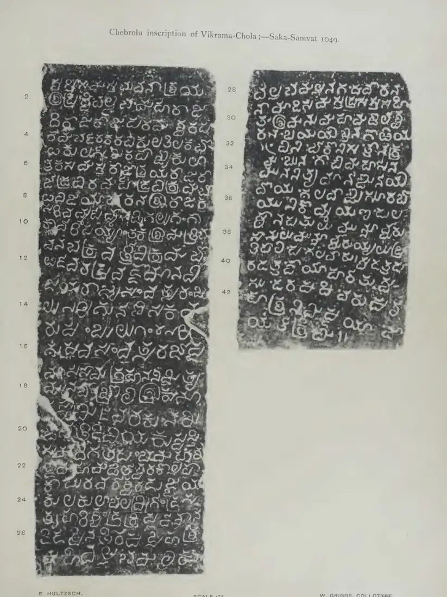
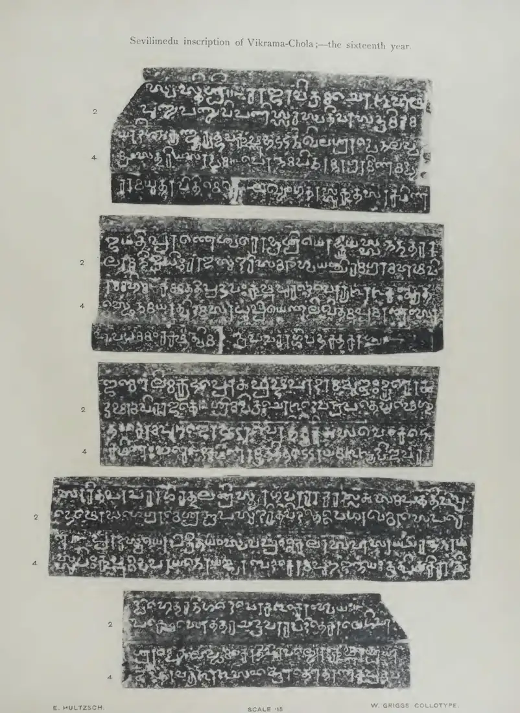

Two Inscriptions of Vikrama-chola
TWO INSCRIPTIONS OF VIKRAMA-CHOLA.
By E. HULTZSCH, PH.D.
A.— Chêbrôlu Inscription of Śaka-Sainvat 1049.
This inscription (No. 153 of 1897) is engraved on a slab in the Kêśavasvâmin temple at Chêbrôlu in the Bâpaṭla tâluka of the Kistna district. The alphabet is Telugu, and the language is likewise Telugu, with the exception of one corrupt Sanskrit ślôka at the end of the inscription.
1 The Telugu nominatives Vêlâṇdu and Pallavarayaṇdu represent the Tamiñ Vêlâṇ and Pallavaraiyaṇ. Mādhavuṇdu is the Telugu nominative of Mādhava.
3 Kadambaṅgudayaṇdu corresponds to the Tamiñ Kaṇambaṅgudayâṇ, an abbreviated form of Kaṇamba â-guḍi-udaiyâṇ.
4 The district of Maṇpi-nâṇdu is mentioned in Tamiñ inscriptions; South-Ind. Inscr. Vol. II. pp. 125, 324, 336, and Vol. III. p. 162.
4 This territorial designation is derived from a surname of Kulôttunga-Chôla I. which occurs in the Kalingattu-Paraṇi; South-Ind. Inscr. Vol. III. p. 152.
5 This measure may have been named after the Eastern Châlukya king Râjarâja I.
The date is the day of alunar eclipse in the month of Jyaishṭha in the cyclic year Plava, which corresponded to the Śaka year 1049 and to the 9th year of the reign of Vikrama-Chôladēva (l. 11 ff.).1 Śaka-Samvat 1049 (expired) corresponds to the cyclic year Plavaṅga (not to Plava as the inscription has it) and to A.D. 1127-28. As this was the 9th year of the king's reign, he must have ascended the throne about A.D. 1119. This result is in accordance with the fact that his father Kulôttuṅga-Chôla I. ascended the throne in A.D. 10702 and reigned for 49 or 50 years3 to about A.D. 1119. According to Professor Kielhorn's calculations, the inscriptions of Vikrama-Chôla in the Tamiľ country seem to show that his reign began on the 18th July A.D. 1108.4 This discrepancy may be explained by assuming that 1108 was the year in which he was appointed ywarāja, while his actual accession to the throne took place after his father's death in A.D. 1119.
The name of the king is preceded by a list of his birudas. These are identical with the surnames borne by his father Kulôttuṅga-Chôla I.5 Among them we find Vikrama-Chôla (l. 7 f.), which was one of the birudas of his father, but is rather out of place here because it is identical with the name of the king himself, and Rājakēsarivarman (l. 8 f.), which is known to have been a surname of the former, while Vikrama-Chôla in his Tamiľ inscriptions bears the title Parakēsarivarman.6
The inscription records the grant of a lamp to the temple of Kumārasvāmin (l. 18 f.) or Mahāsēna (l. 33) at Chembrôlu (l. 18), the modern Chêbrôlu. Hence it appears that the slab containing the inscription, which is now in the Kēśavasvāmin temple, was originally set up in the temple of Kumārasvāmin, which is now called Nāgēśvara.7
The donor was a feudatory of Vikrama-Chôla,—the mahāmaṇdalēsvara Nambaya (l. 30 f.) of the Durjaya family (l. 23 f.). Among his surnames are 'the lord of the city of Kollipākâ' (l. 22 f.), 'the lord of the country of six-thousand (villages) on the southern bank of the Kṛishṇaveṇṇā river' (ll. 25-27), and 'the scent-elephant of Malla' (l. 28). Kollipākâ is mentioned as Kollipâke in an inscription of the Western Châlukya king Jayasimha II.8 and as Kollippâkkai in the inscriptions of Râjêndra-Chôla I.9 and of Râjâdhirâja.10 The second surname of Nambaya was borne later on by the chiefs of Amarâvatî.11
From another inscription of the same chief in the Bhimēśvara temple at Drâkshārāma (No. 266 of 1893)12 we learn that he ruled over the district of Oṅgêrumârga:— [Svasti] sa[madhi]gata-painchchamah[â]śabda-mahāmaṇdalēsvara Kollipâkâ-puravar-ēśvara Durjjayakula-kumuda-chaindra ripuga[ja]-mri(mri)gêndra mallikâ-vallabba [pa]rângganâ-durllabha vilâsp-Vidyâdhara bhôga-Puramdara Kri(kṛi)shṇ[a]veṇṇânadî-tîradakshiṇa-13 shat[s]ahasra-vishay-âdî(dhî)śvara vîra-Mahēśvara kîrtti-sudhâkara guṇa-ratnâkara Vênggi-Châlukya-râjya-mu(mû)lastambha14ripudalitakumbhikumbha Jayângganâ-gri(gri)ha-tôraṇa Mallana-gamn[dh]avâraṇa nâm-âdi-samasta-praśasti-sah[i]tamb[u]na śrîman-mahāmaṇdalēśvaray=Oṅgêrumârggamuna Nambirâju Śaka-[va][r*]shamulu 1052 nṇ-agun-êmti Vaisâkha-punnamayu Sômavâramu Vyatipâta-ni[m]îttamunamndu . . . . . "On the
1 Prof. Kielhorn's calculation of this date will be published shortly.
2 See above, p. 220, note 2.
3 Ind. Ant. Vol. XIV. p. 55, and above, Vol. IV. p. 227. 4 Above, Vol. IV. p. 266.
5 See page 221 above. The only biruda which was not taken over by Vikrama-Chôla, is saptamô Vishṇu. vardhanah,
6 See South-Ind. Inscr. Vol. II. No. 68, and above, Vol. IV. pp. 73 and 263 f.
7 See above, Vol. V. p. 143.
8 Above, Vol. III. p. 231.
9 South-Ind. Inscr., Vol. I. Nos. 67 and 68, and Vol. II. Nos. 9-20.
10 Ibid. Vol. III. p. 52.
11 See above, p. 147 and note 4.
12 This inscription is noticed by Dr. Fleet from Sir Walter Elliot's transcript ; Dyn. Kan. Distr. p. 437 f., note 6,
13 Read -dakshiṇattra,
14 Read dalitaripu.
occasion of Vyatipāta on Monday, the full-moon tithi of Vaisākha in the Śaka year 1052,” etc.
The same slab bears an inscription of Trailôkyamalla, the son of Nambhirâja (No. 267 of 1893):—Svasti samadi(dhi)gata-pamchchamahâsha(śa)bda-mahâmaṇḍalêsvara Kollipâkâ-puravar-âdhîśvara Durjjayakula-kumud[a]-chaîndra ripugaja-mri(mri)gêmdra mal[l]ikâ-vallabha pa[r]âmgganâ-rdullabha1 [vilâ]sa-V[i]dyâdhara bhôga-Puram[da]ra Kr[i](kṛi)shṇaverṇṇânadî-tîradakshiṇa-shatsahasra-vishay-âdhîśvara vîra-Mahêsvara kî[rtti]-sudâ(dhâ)kara guṇaratna-ratnâkara V[êm]gg[i]-Châlukya-[râ] . . . . . [ri]pu[da]litaku[m]bhikumbha Ja[y]â[m]gganâ-gr[i](grî)ha-tôraṇa [sat]ya-Hariś[ch]aîndra dînânâdha(tha)jana-sasya-pramêghavarsha Nambbhana-gamdda(dha)vâraṇa nâm-âdi-samasta-praśasti-sah[it]aâmbuna śrîman-[m]ah[âmaṇḍa] . . . . . r[gga]muna Nambh[i]râ[ju] ko]du[ku] Trai]lôkyamallerâju svasti [Śa]ka-[va][r*]shaâmbulu 1081 n-êmîtti Vaisâkha-bah[u]lapaksha ashṭtamiyu Śa[ni]v[â]ramuna . . . . . “On Saturday, the eighth tithi of the dark fortnight of Vaisâkha in the Śaka year 1081,” etc.
It will be noticed that in this inscription Trailôkyamalla is called ‘the scent-elephant of Nambha,’ i.e. of his father Nambaya or Nambirâja. Consequently it may be assumed that the latter, who bore the surname ‘the scent-elephant of Malla,’ was the son of Malla. In this way we obtain three generations of the chiefs of Oṅgêrumârga:—Malla; his son Nambha, Nambaya or Nambirâja; and his son Trailôkyamalla.
Professor Kielhorn kindly contributes the following remarks. “The date of No. 266 of 1893 would correspond, for Śaka-Samvat 1052 current, to Sunday, 5th May A.D. 1129, and for Śaka-Samvat 1052 expired, to Friday, 25th April A.D. 1130. In Śaka-Samvat 1053 expired, the full-moon tithi of Vaisâkha commenced 7 h. 5 m. after mean sunrise of Monday, the 13th April A.D. 1131, when the yôga was Vyatipāta for about the last quarter of the day. I believe this to be the day intended, but can give no reason why the writer should not have quoted Tuesday (the 14th April) on which the full-moon tithi ended. The date of No. 267 of 1893 would correspond, for Śaka-Samvat 1081 current, to Wednesday, 23rd April A.D. 1158; for Śaka-Samvat 1081 expired, to Tuesday, 12th May A.D. 1159; and for Śaka-Samvat 1082 expired, to Saturday, the 30th April A.D. 1160, when the 8th tithi of the dark half ended 18 hours after mean sunrise. In both dates the given Śaka year is short by 1 of the year of our Tables. This is not uncommon in dates from the eastern part of Eastern India.”2
TEXT.3
A.— Front of Slab.
1 Read -durllabha.
2 “See e.g. my List of North, Inscr. Nos. 367 and 370.
3 From two inked estampages.
4 Read श्रीपृथ्वी.
5 Read श्रेष्ठ.
6 The anusvâra stands at the beginning of the next line.
8 ९९ विजया[भ]रन1 श्रीराजके-
9 2सरिवम्पर्पर्मनडिगलु गंगा-
10 कावेरीपय्यांत(क)3 श्रीम[त्*]त्रि[भु]-
11 वनचक्रवत्तिं विक्रमचो-
12 ९९देवर 4प्रवहंमानवि-
13 जयराज्यसंवत्सरंबु-
14 लु ट अगुने[ण्टि] 5सक[व]-
15 रुषंबुलु १०४ट अ-
16 गु 6प्रवसंवत्सर जेष्ट-7
17 मास सोमग्रहननिमित्य-8
18 सुन चेंब्रोलि श्रीकुमा-
19 [रस्वा]मिदेवरकुनख-
20 [ण्डव]त्तिदिवियकु स्वस्ति
21 समधिगतपंचमह[ा]श-
22 ब्टमहामण्डलेश्वर कोल्लिपा-
23 कापुरवरेश्वर दुर्ज्ज[य]-
24 कुलकुलाचलम्निगेंद्र9 स-
25 त्यहरिश्वंद 10क्रिश्णवेन्नान-
26 11दोदक्षिनतीरषट्सहश-12
27 महीवल्लभ मल्लिका-
B.—Back of Slab.
28 वल्लभ मल्लनगंधवारन13
29 नामादिसमस्तप्रसस्तसहि-14
30 तं 15श्रीमनुमह[ा*]मण्डलेश्व-
31 र नंबय यिच्चिन गोठिय
32 ५० [*] वीनिं चेकीनि संतानक्र-
33 मंबुनं गाचि मह[ा*]सेन-
1 Read °भरण.
2 Read °वर्मः.
3 Read °पर्यंत and add °धरित्रीपति in accordance with some inscriptions of Kulôttunga-Chôla I.; see above, p. 221.
4 Read प्रवर्डसानं.
5 Read शकं.
6 Read प्रवं.
7 Read ज्येष्ठं or, more correctly, ज्येष्ठं.
8 Read °ग्रहणं.
9 Read °सर्गेंद्र.
10 Read क्षणवेण्णां.
11 Read °दक्षिणं.
12 Read °सहसं.
13 Read °वारण,
14 Read °प्रशस्तिं.
15 Read श्रीमन्.
Plate 1 is bound after this page.
34 मुन नित्य मानेण्डु नेयि
35 वोयंगलवाण्डु सूरबो-
36 युनि कीम्मय [*] इंदुल
37 स्थानपतुलु मुन्बूर्वरु
38 सानुलु मुन्बूर्वरुयलु ब्र-
39 तिपालिपंगलवारु । स्वदत्त1 प-
40 रदत्तं ग्वा यो हरेतु स्व-
41 सुंदर [*] षषिं वरुषश-
42 हश्यनि मिष्टयां जा-
43 यते क्रिमि ॥
TRANSLATION.
(Line 1.) Hail! In the 9th year of the increasing and victorious reign of the asylum of the whole world, the favourite of Fortune and of the Earth, Mahárájádhirája, Rájaparamésvara, Paramabhaṭtáraka, the front-ornament of the race of the Sun, the crest-jewel of the Chôla family, the destroyer of the Pândya family, the asylum of all kings, Rájarájéndra, Vira-Mahéndra, Vikrama-Chôla, he whose ornament is victory, the glorious Rájakésarivarma-Permanadî, [the lord of the earth] as far as the Gaṅgâ and the Kâvêri, the glorious emperor of the three worlds, Vikrama-Chôladéva,—
(L. 14.) On the occasion of an eclipse of the moon in the month of Jyèshṭha in the Plava-samvatsara which was the Śaka year 1049,—
(L. 20.) Hail! the glorious Mahámaṇḍalésvara Nambaya, who was possessed of all the glory of such names as the Mahámaṇḍalésvara who has obtained the five great sounds; the lord of Kollipâkâ, the best of cities; the lion of the principal mountain— the Durjaya family; a Hariśchandra in truthfulness; the lord of the country of six-thousand (villages) on the southern bank of the Kṛishṇaveṇṇâ river; the lover of the jasmine flower; (and) the scent-elephant of Malla,—
(Ll. 18-20 and l. 31 f.) gave 50 sheep to the temple of the god Kumârasvâmin at Chembrôlu for a perpetual lamp.
(L. 32.) Having received these (sheep), Kommaya, (the son) of Sūra-Bôya, with (his) descendants in succession, has to tend (them) and to supply daily to the Mahâsêna (temple) one mând2 of ghee.
(L. 36.) The three-hundred temple servants: (sthânapati) (and) the three-hundred dancing-girls of this place have to protect (this grant).
[Ll. 39-43 contain one of the usual minatory verses.]
B.— Śevilimêdu Inscription of the Sixteenth Year.
This inscription (No. 43 of 1900) is engraved on the west wall of the Kailâsanâtha temple at Śevilimêdu, a village on the northern bank of the Pâlâru and about 2 miles south-west of Conjeeveram.
1 This well known Sanskrit verse is here full of mistakes.
2 See above, p. 156, note 3.
The inscription consists of eight verses in quaint Sanskrīt. The alphabet is Grantha. The Tami letter r is used in Kômpura (vv. 4 and 7). Final m is employed instead of anusvâra in chiram, vidushâm (v. 2) and labdham (v. 5). Instead of prôdghrishta and udbhava we find prôtghrishta (v. 1) and utbhava (v. 3). Ámhvaya occurs twice (vv. 1 and 2) instead of áhvaya, and sá[r*]ddha (v. 5) instead of sârttha. The Tami names Kirâñji, Ódimâkki, Kodi, Ponnambi and Kômbura are spelt Kirâñchi (v. 8), Ótimâkki (v. 4), Koti (v. 5), Ponnampi (v. 6) and Kômpura (vv. 4 and 7), with ch, t and p instead of j, d and b.
The date is Monday, the day of Uttara in the second fortnight of Vaisâkha during the sixteenth year of the reign of Vikrama-Chôladêva (v. 3).1 This king bore the surnames Akalañka and Tyâgavârâkara (v. 1). According to Mr. Venkayya, the former is applied to Vikrama-Chôla in the Kulôttuñga-Sôlaṇ-ulâ, an unpublished Tami poem composed in honour of Kulôttuñga II., and Tyâgasamudra, with which Tyâgavârâkara is synonymous, occurs in the Vikkirama-Sôlaṇ-ulâ2 and in the Pithâpuram pillar inscription of Mallapadêva.3
The inscription records that three persons assigned to the Śiva temple in the village of Râjasundari (v. 2) or Nṛpiasundari (v. 3) some land (v. 3) and a garden (v. 5). The village of Râjasundari is evidently identical with Ševilimêdu, and the temple of Śiva, to which the grant was made, is the Kailâsanâtha temple4 on which the inscription is engraved.
Besides the subjoined inscription, six Tami inscriptions have been copied in the same temple, the ancient name of which was Mûlasthâna. In three of them (Nos. 40-42 of 1900) the village is named Ševâṇamêdu. It belonged to Virpêdu-nâdu5 or Virpêttu-nâdu, a subdivision of Kâliyûr-kôttam,6 a district of Jayaṅgoṇda-Chôla-maṇdalam, and bore the surname Nagariśvara-chaturvêdimaṅgalam.
TEXT.7
1 स्वस्ति श्री ॥— राजा विक्रमचोक्ष एष ज[य]ति प्राणेश्वरो भूश्रि-योभूयस्सन्तराजमौलिमकुटप्रोत्घृष्टपादाम्बुजः8 [*] दूरोत्सारि[त]पापराशिरतुल-श्रीस्थागवाराकरस्सत्सम्पत्तिविवृद्धिहेतुरनिशन्देवोक्कंकांह्वयः9 ॥— [१*]
2 पुण्यपण्यविपणिस्सरस्वतोवासभूमिरमला मुनोन्दधीः10 [*] राजसुन्दरि-समांह्वयश्चिरम्11 ग्राम एष विदुषाम्12 विराजते ॥— [२*]13श्रीमद्विक्र[म]चोक्षदेव-नृपतेव्वं[र्ष] शुभे षोडशे ग्रामे श्रीनृपसुन्दरीति विदिते वैशाखमासेपरे [*] पक्षे सोत्तरचन्द्रवारविदिते काले शिवा-
3 यादिशन्14 कुण्डूरुत्मवक्षणभट्टनिखि[ल]श्राद्धेन लब्धाम् महीम् ॥— [३*] कम्मत्तिप्रभवः क्षणपुरदेवोरुक्काक्कः [*] आत्[तं]कोम्पुण्जो भट्टावोतिम्[क्कि]-
1 Prof. Kielhorn's calculation of this date will be published shortly.
2 South-Ind. Inscr. Vol. II. p. 309 and note 1. 8 Above, Vol. IV. p. 228.
4 The present name of the temple is perhaps alluded to in verse 5 by the words "the ancient (god) who resides on the Kailâsa (mountain)."
5 The same nâdu is mentioned also in South-Ind. Inscr. Vol. I. p. 117, and Corrigenda on p. 184. Virpêdu is the modern Vippêdu, 2 miles west of Ševilimêdu.
6 The same district is referred to in South-Ind. Inscr. Vol. I. Nos. 84, 85, 147, 148, and Vol. III. pp. 2, 138, 142.
7 From three inked estampages.
8 Read °प्रोड्र्ष्ट.
9 Read °काह्वयः.
10 Read °धिः.
11 Read °समाह्वयश्चिरं.
12 Read विदुषां.
13 The म of °द्विक्र[म]° is engraved below the line:
14 Read °रुहव,
Plate 2 is bound after this page.
त्सवेंकटौ1 ॥— [8*] प्रादुस्खयोपि चितयं स्वप्रं कैलासवासाय चिर[न्त]नाय
[*] श्राद्धेन लब्धम्2 कोतिवीरवल्योः कृष्णाश्रया-
4 सं सतुरीयसाद्धम्3 ॥— [५*] पोन्नम्पि[न]ाम्ना ग्रामोणमद्धास्थेन मया
त्विदम् [*] साधुप्रियेण लिखितम् प्रमा[णं] साक्षिणः परे ॥— [६*] 4दक्षि-
णामूत्तिभद्दीयमङ्कूर्द्विजवरस्मुधीः [*] कृष्णदैपायनो यज्वा वेदकोम्पु2जन्नयः
[॥ ७*] दृत्वित्5 किराच्चिजनितावरुठाठ्ठसंज्ञौ तौ ताणकप्रभव-
5 रामयुतावितोमे [*] लेखं ग[त]ास्मुक्तसाक्षिण एव धम्मं6 रक्ष-
न्त्विमन्नृपवराश्शिवभक्तकाश्च ॥— [८*]
TRANSLATION.
Hail! Prosperity! (Verse 1.) Victorious is this king Vikrama-Chóla, the husband of the Earth and of Fortune, whose lotus-feet are frequently rubbed by the diadems on the heads of bowing kings, who has driven far away all sins, whose glory is matchless, the ocean of liberality (Tyágavárákara) who continually causes the increase of the prosperity of good men, the king named Akałańka.
(V. 2.) Resplendent for a long time is this village of learned men, named Râjasundari, a market for the trade in good deeds, the pure place of residence of the goddess of learning, (and) the seat of lords of sages.
(V. 3 f.) In the auspicious sixteenth year (of the reign) of the glorious king Vikrama-Chóladėva, in the month of Vaiśákha, in the second fortnight, at the time known as Monday combined with Uttara,7— the two Bhatṭas Krishṇapuradėva Arulâlaka, born at Kammatti, and Ödimûkki,8 born at Âttañ-Kômbura, together with Vênkata, assigned to Śiva, at the village known as the prosperous Nṛipasundari, land which (they) had received through the great piety9 of Krishṇabhatṭa, born at Kuṇđûr.10
(V. 5.) The same three persons gave to the ancient (god) who resides on the Kailâsa (mountain) their three-fold garden,11 which (they) had received through the piety of Kodi and Vîravali,12 in which kôkilas (krishṇa) lived on mango-trees, (and) which possessed a number of men of the fourth (caste) (as attendants).
(V. 6.) By me, the village arbitrator (madhyastha)13 named Ponnambi, the friend of good men, this document (pramâṇa) was written. Witnesses (are) the following.
1 Read °स्वेंकटौ.
2 Read लब्धं.
3 Read °सात्यंम्.
4 Read °मूर्तिं.
5 Read चत्विक्.
6 Read धम्मं.
7 Uttiram is the usual Tamil form of Uttara-Phalgunt. The Tamil form of Uttara-Bhadrapadâ is Uttiraṭâdi, and that of Uttardśhâdhâ is Uttirâdam.
8 The same name, which seems to mean 'narrow-nosed,' occurs in an inscription at Ukkal; South-Ind. Inscr. Vol. III. p. 6.
9 Śrâddha seems to be used incorrectly for śraddhd.
10 A village of the same name is mentioned in two inscriptions at Manimaṅgalam; South-Ind. Inscr. Vol. III. pp. 73 and 75.
11 I take this meaning of vapra from Dr. Kittel's Kannada-English Dictionary. The meaning 'field' does not fit here because mango-trees are stated to have grown in the vapra.
12 The same name occurs in South-Ind. Inscr. Vol. III. pp. 73 and 74.
13 See South-Ind. Inscr. Vol. III. p. 2.
(V. 7 f.) Dakshipâmûrti-Bhatta, a wise Brâhmaṇa of Allûr,1 Krìshṇa-Dvaipâyana Yajvan, Jannaya Ritvij of Vêda-Kômbura,2 (and) the two persons named Aru!âla, who were born at Kirâñji,3 together with Râma, born at Tâṇaka. These were written down as the only witnesses of (this) pious gift. Let the best of kings and the devotees of Śiva protect this grant !
1 A village of the same name is mentioned in two inscriptions at Maṇimaṅgalam ; South-Ind. Inscr. Vol. III. pp. 73 and 74. It may be identical with 'Allur' in the Madurântakam tâluka between the 'Perumbair' and 'Olakur' railway stations.
2 Compare Dvêdai-Kômburam in South-Ind. Inscr. Vol. II. p. 259 and note 3.
3 The same place is mentioned in an inscription at Tirukkalûkkuṇram ; South-Ind. Inscr. Vol. III. p. 168.

